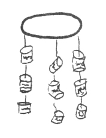

Chichiriviche - 1977, para un ejecutante barrigón
Choroní - 2012, para un ejecutante barrigón, una mujer en hilo dental, tres equipos de sonido móviles con generador


|

Tenemos un país hermoso, Venezuela, que estamos destruyendo. Somos uno de los más grandes productores de petróleo y hemos colaborado con la contaminación del globo por más de cien años, causando además, terribles accidentes. Ahora continuamos con el arco minero. Como venezolanos, le debemos al mundo y en especial a nuestro bello país, todos nuestros esfuerzos por cuidar al ambiente y a sus seres.

Guarapiche Blues, último disco y video de Ozono, 2020, dedicado a la cantante María Rivas en homenaje a su activismo ecológico con la música, quien fuera su precursora en Venezuela.